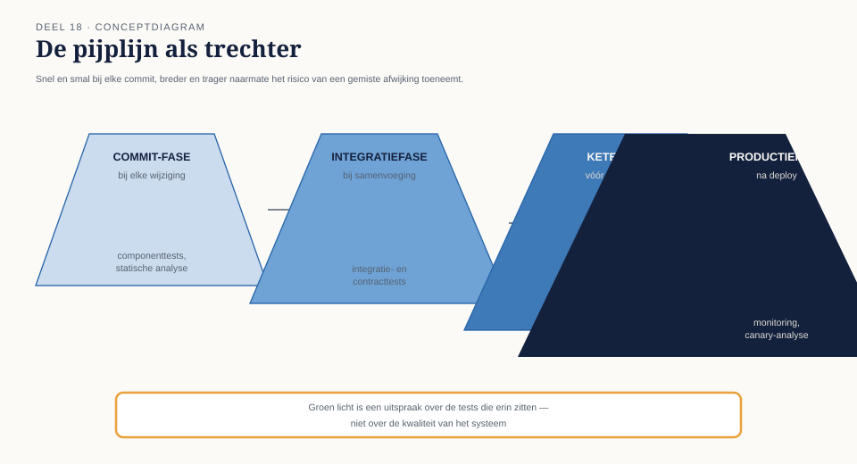
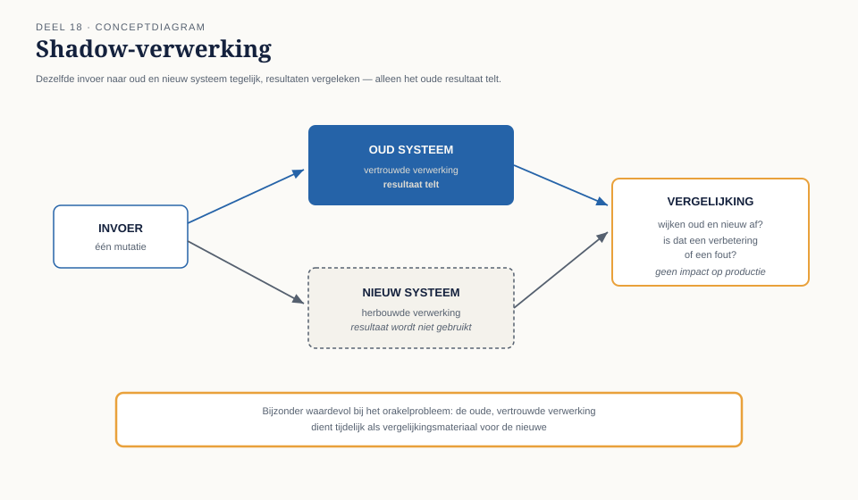

Cursus Testen en Kwaliteitsborging · Niveau 2 (Professional) · Deel 18 van 30
Testautomatisering II: in de pijplijn
Groen licht, veertig minuten later rood: de pijplijn van het portaalteam gaf een schijnzekerheid die niemand had bedoeld. Dit deel plaatst automatisering in de CI/CD-pijplijn — met gefaseerde testselectie, het onderscheid tussen deploy en release, feature toggles, en testen in productie via canary-releases en shadow-verwerking — en leert u een pijplijn te lezen als wat zij is: een uitspraak over de tests die erin zitten, niet over de kwaliteit van het systeem.
6secties
±3uleestijd + werkboek
4controlevragen
4pijplijnfasen §2.1
Positionering. Deze cursus is een voorbereiding op het ISTQB Certified Tester Advanced Level-examen en/of TMAP-certificering (Quality for cross-functional teams), en uitdrukkelijk geen vervanging van het officiële examenmateriaal — de actuele ISTQB Advanced Level-syllabus (istqb.org) en de TMAP-body of knowledge (tmap.net). Alle formuleringen, figuren en werkvormen in dit materiaal zijn van Ductus; studeer voor het examen altijd óók de bron.
Niveau 2: 11 TMAP integraal → 12 Teststrategie op programmaschaal → 13 Testanalyse gevorderd → 14 Kwaliteitskenmerken I → 15 Testdata en testomgevingen → 16 Keten- en integratietesten → 17 Testautomatisering I: ontwerp → 18 Testautomatisering II: in de pijplijn (hier) → 19 Niet-functioneel testen → 20 Testen met generatieve AI → 21 Testmanagement → 22 Examentraining + portfolio
01
Waar dit deel over gaat
⏱ 8 min
Waar deel 17 het ontwerp van automatisering behandelde, plaatst dit deel die automatisering in de doorlopende CI/CD-pijplijn: wanneer draait wat, en wat betekent een groen licht daadwerkelijk?
Aan het eind van dit deel kunt u:
testautomatisering integreren in een CI/CD-pijplijn met bewuste testselectie per fase;
het onderscheid tussen deploy en release toepassen als ontwerpprincipe voor risicobeheersing;
feature toggles inzetten en de testimplicaties ervan beoordelen;
testen in productie (canary, shadow) toepassen als aanvulling op, niet vervanging van, vooraf testen;
de pijplijn zelf als kwaliteitspoort beoordelen en verdedigen tegen druk om haar te omzeilen.
02
Groen licht, veertig minuten later rood
⏱ 10 min
De geautomatiseerde pijplijn van het portaalteam gaf op een vrijdagmiddag groen licht: alle 340 geautomatiseerde tests geslaagd, klaar voor deploy. Veertig minuten na de deploy meldde het kernintegratieteam een falende ketentest — niet omdat het portaalteam iets fout had gedaan, maar omdat de pijplijn van het portaalteam de ketentest (deel 16) niet had meegenomen: die liep apart, handmatig gepland, eens per twee weken.
Groen licht van een pijplijn zegt alleen iets over wat er in die pijplijn zit. Dit is T8 in een nieuwe gedaante: een groen scherm dat een besluit lijkt te ondersteunen, zonder dat iemand had vastgesteld wélke risico's het daadwerkelijk afdekte.
Kernzin
Een groene pijplijn is een uitspraak over de tests die erin zitten, niet over de kwaliteit van het systeem. Verwar die twee, en de pijplijn wordt het nieuwe exitcriterium-dat-een-percentage-is.
Controlevraag
Uit Werkboek deel 18, Opdracht 18.1 — herken het patroon
1Welke bevinding uit niveau 1 herhaalt zich in deze casus, en in welke technische vorm?Toon antwoord
T8 — een groen signaal dat wordt gelezen als "alles is in orde" terwijl het criterium (de scope van de pijplijn) niet was vastgesteld of gecommuniceerd.
03
Testselectie per fase in de pijplijn
⏱ 18 min
Een pijplijn die bij elke wijziging alle 340 tests plus de volledige ketentest draait, wordt binnen de kortste keren te traag om bruikbaar te zijn. De oplossing is gefaseerde testselectie, gekoppeld aan de teststrategiematrix (deel 12):
Fase
Wanneer
Wat draait
Doel
Commit-fase
bij elke wijziging
snelle componenttests, statische analyse
direct feedback aan de ontwikkelaar
Integratiefase
bij samenvoeging naar de hoofdlijn
integratie- en contracttests (deel 16)
vroeg conflicten tussen teams vangen
Ketenfase
vóór een release
volledige ketentest, inclusief Vestara
het risico dat T7 herhaalt, expliciet afgedekt
Productiefase
na deploy
monitoring, canary-analyse (§5)
risico's die alleen onder echte belasting zichtbaar worden

Figuur 18-1 — De pijplijn als trechter: snel en smal bij elke commit, breder en trager naarmate het risico van een gemiste afwijking toeneemt.
Gefaseerde selectie is geen versoepeling maar een toepassing van precies dezelfde risicologica als deel 12: niet alles hoeft even vaak en even diep, mits de keuze bewust en gedocumenteerd is. Het probleem bij het portaalteam was niet dat de ketentest apart liep — dat kan een verantwoorde keuze zijn — maar dat niemand dat wist toen het groene licht werd gelezen als "alles is getest".
Controlevraag
Uit Werkboek deel 18, Opdracht 18.2 — ontwerp de gefaseerde pijplijn
1Verdeel de tests uit de teststrategiematrix (deel 12) over de vier fasen hierboven, voor de mutatieverwerking. Onderbouw waarom de ketentest niet bij elke commit kan draaien, en wat u doet om het risico daarvan te compenseren.Toon antwoord
Compensatie kan bijvoorbeeld een dagelijkse (in plaats van tweewekelijkse) automatische ketentestrun zijn, gecombineerd met contracttesten (deel 16) die wél bij elke commit draaien en een deel van het risico afvangen tussen de ketentestmomenten in.
04
Deploy versus release
⏱ 14 min
Deploy is het technisch uitrollen van nieuwe code naar een omgeving, inclusief productie. Release is het besluit om die code daadwerkelijk zichtbaar of actief te maken voor (een deel van) de gebruikers. Het scheiden van deze twee is een van de krachtigste risicobeheersingsprincipes in moderne delivery.
Wanneer deploy en release gelijktijdig gebeuren, is elke wijziging onmiddellijk voor alle gebruikers zichtbaar — een fout heeft direct volledige impact. Door ze te scheiden (met feature toggles) kan code al in productie draaien, getest worden onder echte omstandigheden op beperkte schaal, zonder dat een fout meteen alle 210.000 deelnemers raakt.
Figuur 18-2 — Deploy en release als twee aparte schakelaars: code kan gedeployed zijn en toch uitgeschakeld (niet released), of andersom nooit gedeployed maar wel "aangekondigd".
Een feature toggle is een schakelaar in de code die bepaalt of nieuwe functionaliteit actief is, onafhankelijk van deploy. Voor testen heeft dit twee gevolgen: een kans (nieuwe functionaliteit testen in productie-achtige omstandigheden vóór volledige release) en een risico — het aantal mogelijke toestandscombinaties groeit. Een systeem met vijf toggles heeft potentieel 2⁵ combinaties van aan/uit, en de meeste teams testen slechts een klein deel daarvan. Dit is de terugkeer van de combinatorische explosie uit deel 13 (pairwise), nu toegepast op toggle-combinaties.
Kernzin
Elke toggle die u toevoegt, voegt een testdimensie toe die niemand vraagt te testen totdat twee toggles tegelijk een onverwachte combinatie blootleggen.
Controlevraag
Uit Werkboek deel 18, Opdracht 18.3 — deploy of release?
1Voor elke situatie: is dit een deploy-, een release-, of een beide-tegelijk-beslissing? (a) Nieuwe code staat live op de servers maar is achter een uitgeschakelde toggle verborgen. (b) Een toggle wordt aangezet voor 5% van de werkgevers. (c) Een hotfix wordt direct volledig zichtbaar voor iedereen zodra hij op de server staat.Toon antwoord
(a) Deploy zonder release. (b) Release (gedeeltelijk). (c) Deploy en release gelijktijdig — het scenario met het hoogste risico, omdat er geen scheiding is.
05
Testen in productie
⏱ 16 min
Shift-right is een aanvulling, geen excuus om vooraf minder te testen bij hoog risico. Twee concrete technieken werken dat uit.
Canary-releases rollen nieuwe functionaliteit eerst uit naar een klein, gecontroleerd deel van de gebruikers (bijvoorbeeld 2% van de werkgevers), met intensieve monitoring, vóórdat de volledige uitrol volgt. Een probleem raakt zo een beperkte groep in plaats van iedereen, en wordt — mits de monitoring goed is ingericht — snel opgemerkt.
Bij shadow-verwerking draait nieuwe functionaliteit parallel aan de bestaande, met dezelfde invoer, maar zonder dat het resultaat daadwerkelijk wordt gebruikt. De uitkomsten worden vergeleken: waar wijken oud en nieuw af, en is dat een verbetering of een fout? Dit is bijzonder waardevol voor een herbouwde berekening waar het orakelprobleem speelt: de oude, vertrouwde verwerking dient tijdelijk als vergelijkingsmateriaal voor de nieuwe.

Figuur 18-3 — Shadow-verwerking: dezelfde invoer naar oud en nieuw systeem tegelijk, resultaten vergeleken, alleen het oude resultaat telt.
Beide technieken vereisen dat een fout, als hij optreedt, beheersbaar en omkeerbaar blijft. Voor de invaarberekening in niveau 3 — eenmalig en grotendeels onomkeerbaar — is canary-releasen in de klassieke zin niet toepasbaar; shadow-verwerking blijft daar wél waardevol, juist omdat er dan niets onomkeerbaars gebeurt.
Controlevraag
Uit Werkboek deel 18, Opdracht 18.4 — canary of shadow?
1Voor elke situatie: canary-release, shadow-verwerking, of geen van beide (te risicovol)? (a) Een nieuwe interface-indeling van het portaal. (b) Een herbouwde berekeningsregel voor premie-afdracht. (c) De definitieve invaarberekening (niveau 3-vooruitblik).Toon antwoord
(a) Canary — laag risico bij een fout, direct zichtbaar en omkeerbaar. (b) Shadow — vergelijk oud en nieuw zonder het nieuwe resultaat te gebruiken, precies het orakelprobleem opgelost door de oude verwerking als referentie te gebruiken. (c) Geen van beide in de klassieke zin (eenmalig, onomkeerbaar) — al blijft een vorm van shadow-vergelijking (zonder daadwerkelijk in te varen) waardevol als extra check.
06
De pijplijn als kwaliteitspoort
⏱ 12 min
Onder tijdsdruk ontstaat vrijwel onvermijdelijk de vraag: kunnen we deze ene keer de pijplijn overslaan, of een falende test tijdelijk uitschakelen om te kunnen deployen? Dit is exact de druk die T8 veroorzaakte, nu in technische vorm: een kwaliteitspoort die "deze ene keer" wordt omzeild, is een kwaliteitspoort die op den duur nooit meer iets tegenhoudt.
Een pijplijn moet kunnen weerstaan: het uitschakelen van individuele tests zonder geregistreerde reden en zonder een vervolgactie om ze te herstellen — vergelijk de discipline rond bevindingenbeheer — en "even handmatig langs de pijplijn" deployen, wat elke garantie ondermijnt die de pijplijn zou moeten geven. Een kwaliteitspoort die nog nooit een deploy heeft tegengehouden, heeft waarschijnlijk nog nooit het juiste getoetst — of is zo vaak omzeild dat zij feitelijk niets meer betekent.
TMAP-lens
Hoe heet dit daar. CI/CD-integratie valt in TMAP onder agile/DevOps-fit, met een sterke nadruk op de pijplijn als gedeeld, teambreed instrument — niet als iets dat een aparte DevOps-rol beheert namens het team. Waar het werkelijk anders is. TMAP benadrukt sterker de koppeling tussen pijplijnontwerp en VOICE: elke fase in de pijplijn zou een expliciete indicator moeten opleveren, zodat "groen licht" nooit een geïsoleerd signaal is maar onderdeel van het bredere VOICE-beeld.
Verder naar deel 19
Automatisering en pijplijn zijn ontworpen. Deel 19 verlegt de aandacht naar niet-functioneel testen: de jaarwerkpiek als vraag die geen enkele functionele test beantwoordt — performance, betrouwbaarheid, en de eerste laag beveiligingstesten.